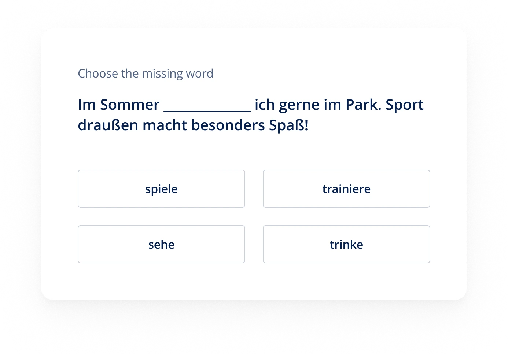
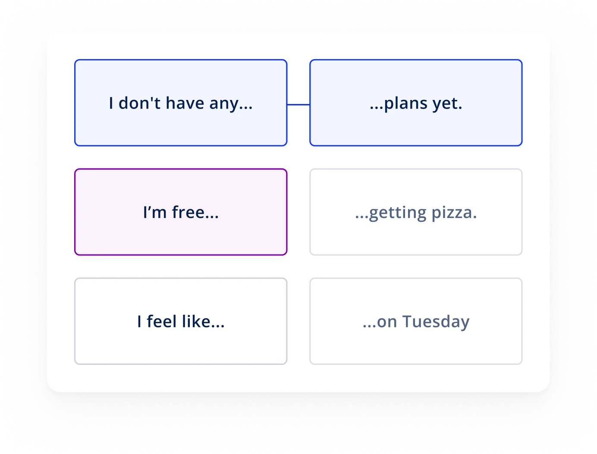
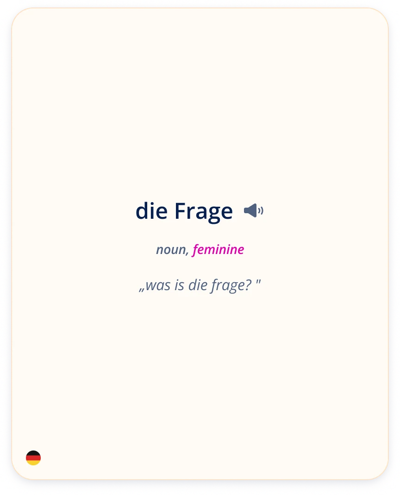
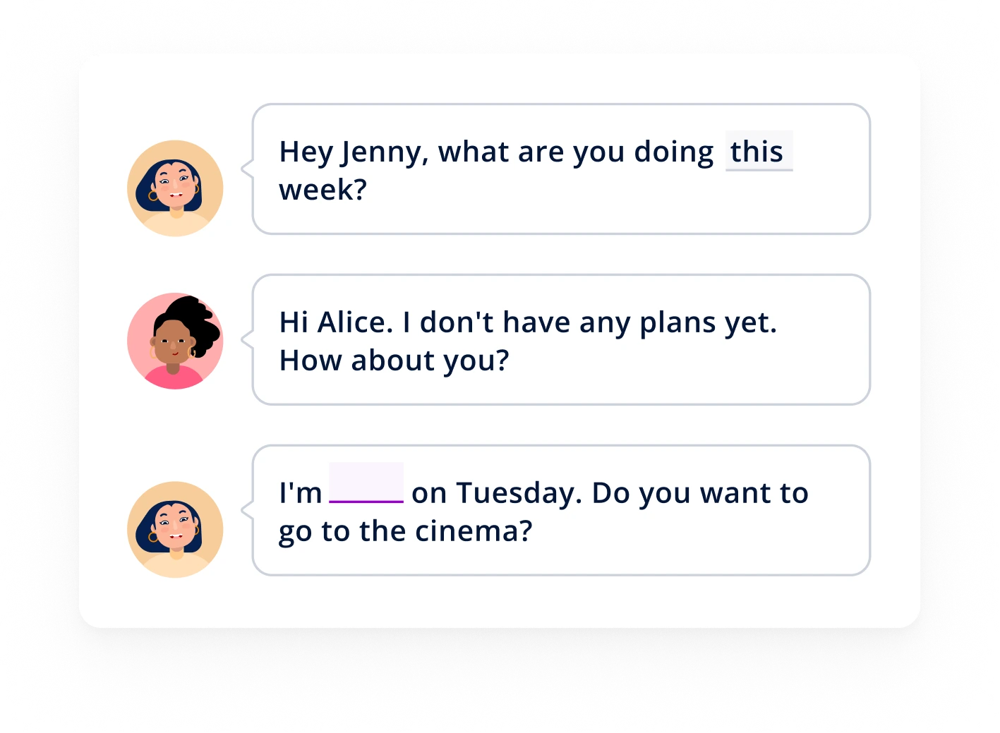
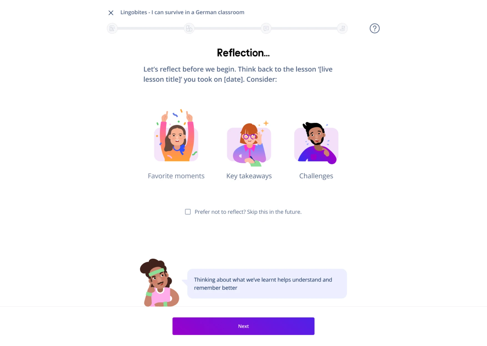

1 Support without a crutch
Hypothesis: Encouraging students to attempt questions first will train them to use context before relying on aids, and showing translations at the end will ensure comprehension.
Case study · Lingoda
I designed Lingoda's flagship practice activity, which lets students practise a variety of language skills after class. After launch it became the most used practice activity at Lingoda.




All compared with the previous exercises, since launch.
Final design
Short practice sessions that reinforce live lessons and let students use the language in real-life situations, through exercises like gap-fills and dialogue-based questions.
Refresh key vocabulary with flashcards and single-choice questions.
Recall important phrases from the lesson and use them to build meaningful sentences.
Fill in the blanks in dialogues to see how grammar works in real conversation.
Research & insights
Meaningful practice should improve satisfaction, engagement and progress, and so keep students longer.
The product vision is to use AI to create practice that fits Lingoda's curriculum. Our hypothesis: better practice raises retention, and with it customer lifetime value.
Design process
Guided by the user insights and Lingoda's learning principles, we set three principles to shape the work.
Practice should be integrated with live lessons and guided by Lingoda's expert advice.
Practice needs to fit in the limited time students have.
Students want to practise skills in context and value real-life language use.
I worked with PMs, engineers, the education team and LearnJam, a learning design agency, to define how practice fits the curriculum. We prioritised lesson review, which closes the gaps in existing practice.
We proposed a sequence of short activities, from spotting vocabulary to using language in real life. The final activities were chosen after prototyping with AI and testing with users.
Success metric
How much a student is engaging.
Success metric
How many students are engaging.
We ran 3 rounds of user tests with 25 participants, nearly half of them Lingoda students. They covered enjoyability, challenge, usability, scoring and the barriers to practising after class.
Design explorations
Design problem 1
How might we balance support and challenge?
Hypothesis: Encouraging students to attempt questions first will train them to use context before relying on aids, and showing translations at the end will ensure comprehension.
Nudges students to attempt the question before using translation support.
Shown once they finish, to ensure comprehension.
Active engagement improves learning, so the answer isn't revealed straight away. Motivated learners valued the tries but others found them frustrating, so there is an option to reveal the answer immediately.
Design problem 2
How might we design scoring to drive repetition and motivation?
Hypothesis: Tiered scoring makes performance easier to understand and motivates learners to improve, as advancing from one tier to another (e.g., 1 star to 2 stars) is easy to understand.
Testing showed students wanted section scores to focus on their mistakes. So each section's score is compared with the learner's own average, and targeted resources follow from how they did.
Design problem 3
How might we help learners become better at learning?

Hypothesis: Learner training will help learners use Lingobites more effectively and in general build autonomy in their language learning.
We introduced Frank as a guide who offers motivation, reflection and learning tips.
One student said, "It felt like he was communicating with me. If I needed support, he would be there, creating a sense of trust."
Rollout & impact
We launched to a limited set of modules and languages first. Self-learning activities per user rose significantly, but the share of active self-learners barely moved: it motivated active users to practise more, not inactive ones.
Lingobites is now the most used practice activity as a share of all interactive self-learning. Compared with the previous exercise:
We surveyed 163 students.